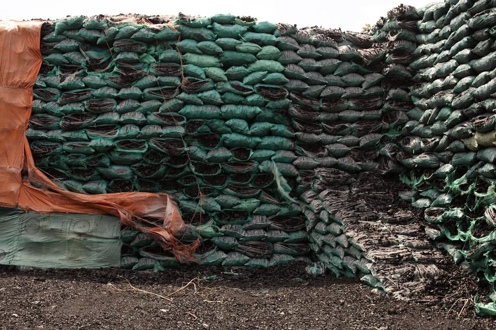
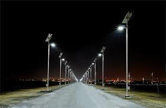
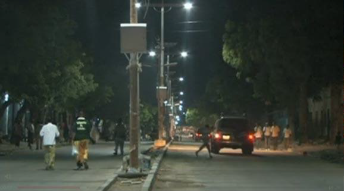

State Minister for Environment,
Office of the Prime Minister and Line Ministries and Ministry of Planning Federal Government of Somalia
November, 2015
Somalia has prepared its INDCs in line with UN Framework Convention on Climate Change (UNFCCC) and the decision of the “Lima Call for Action” to formulate its policy, plans and mitigation and adaptation projects intended to achieve the objectives of the INDCs. Such policies and planed projects proposed are based on the status of environment of the country, existing and planned policies for sustainable sector based developments and Somalia’s Compact and New Deal, which was adopted in 2013 by the Federal Government of Somalia (Federal Republic of Somalia, 2013).
Somalia is generally arid and semi-arid with two seasonal rainfall. The rainfall is influenced by the Inter-Tropical Convergence Zone (ITCZ), the north-south movement, which results in two rainy seasons and two dry seasons a year. January to March are the longest dry “Jilaal” season, resulting from ITCZ coming from the dry Arabian Peninsula. This is followed by the “Gu” a major rainy season from April to June. Then the dry “Jilaal” dry season from July to September, which is associated with cool sea breezes from the Indian Ocean that result in light coastal “Hagaaya” rains in July and August. There is also the “Deyr” light rainy season in October and November. Total annual average rainfall is 280 mm and the highest annual rainfall is about in about 500-600 mm in high rainfall years (UNEP, 2005)
Somalia has limited forest of about 10.5 percent of the area of the country, because most of the tropical forest along the Shabelle and Jubba Rivers and the inter-riverine areas, have been cleared for agricultural use (World Bank, 2012). In addition, after the civil war, the production of charcoal for local cooking use and mostly for export to Saudi Arabia and the United Arab Emirate (UAE) solely for tobacco smoking using “Shisha” had a negative deforestation impact. There is also some charcoal export to Yemen and India. Aerial survey reveals drastic clearing of forest throughout the southern Somalia (UNDP and World Bank, 2007). Therefore, the production and export of charcoal resulted in a colossal deforestation that resulted in desertification (Hamza, Buri M., 2012).
The lack of alternative source of energy for domestic cooking and the inefficient process of making charcoal was already contributing to deforestation. However, the greatest damage resulted from the huge export of charcoal to the Gulf Countries. The Acacia species, were originally source of grazing for goats and camels, nitrogen fixation to enhance soil fertility, fencing of livestock in night enclosures and the traditional use of only dead trees for cooking. Such local use was sustainable, but logging of living trees for charcoal export resulted in extreme deforestation and is leading to desertification. In addition, the acacia trees do not grow fast enough to replace the felled trees. Therefore rangeland which consisted of forest trees of mostly Acacia species, shrubs and grassland are denuded and results in soil erosion. These factors lead to the reduction of land use for agriculture and pastoral livestock production (UNDP and World Bank, 2007).
Most charcoal is today produced in Southern Somalia and illegal exports (about 80 percent of production) constitute a large share of all exports from the South. There has been a rapid expansion in the production of charcoal in recent years, with much of it being exported to meet demand of the above mentioned importing countries. The incentives for charcoal exports are clear: charcoal prices in Southern Somali regions are in the vicinity of US$3-4 per bag, while in the Gulf States the same bags sell for US$10 each (UNDP and World Bank, 2007).
Somalia is experiencing a number of recurring disasters as it is reported in a number of disasters data bases such as Emdat as indicated in Table 1 (Abdiweli Sulaiman Abdi, 2013):
Table 1: Top natural Disasters Report
| Disaster | Date | Affected People |
|---|---|---|
| Drought | 2008 | 3,300,000 |
| Drought | 2010 | 1,400,000 |
| Flood | 1997 | 1,230,000 |
| Drought | 2000 | 1,200,000 |
| Drought | 1987 | 500,000 |
| Flood | 2006 | 299,000 |
| Flood | 2000 | 220,000 |
| Drought | 2004 | 200,000 |
| Flood | 2006 | 155,500 |
| Flood | 2000 | 150,000 |
Percentage of reported people killed by disaster type
Percentage of reported people affected by disaster type

The data presented above is reasonably clear and shows the fact that there is an enormous challenge ahead as to what should be done to mitigate and adapt to those recurring disasters and why are we trapped in this cycle? It is also worth to remember that Somalia’s long coastline, the longest coastline of Africa is about 3,333 km long and about 55 per cent of its population lives along this coastline. 0n 26 December 2004, Somalia was hit by the tsunami that killed more than 300 people and destroyed homes, boats and fishing equipment and about 18,000 households were estimated to be directly affected.
The recent tropical cyclones as recent Chapola and Megh Cyclones (November, 2015) that threatened Somalia are amongst the most powerful and destructive meteorological systems on earth that Somalia should be aware of. With the current global warming, Somalia is at risk and has all the six main requirements to suffer from this types of tropical cyclones again and again; and those requirements are: sufficiently warm sea surface temperatures, atmospheric instability, high humidity in the lower to middle levels of the troposphere, enough causes to sustain a low pressure center, a preexisting low level focus or disturbance, and low vertical wind shear.
The combination of the disasters Somalia is prone to and the disasters occurrence predictions from scientists clearly show that the worst is yet to come. At this era, Somalia cannot afford to lose so many lives again. Therefore an effective disaster management, a well warned and informed population and a coordinated joint government inter- ministerial plans are needed to achieve mitigation and adaption measures.
The mainstay of the Somali economy has traditionally been dominated by pastorals and crop production, followed by fisheries and forestry and these four sectors are supporting over 80% of the population. The Boswella criteria and sacra trees are highly-prized for producing frankincense, however, their natural regeneration is threatened by overgrazing. Somalia is also a large producer of myrrh and gum Arabic. The Cordeauxia edulis plant which produces yeeb nuts in the central regions is now thought to be endangered. The level of agricultural production, including bananas, cotton, rice, mango trees, and citrus, is generally far below its peaks of the late 1980s. Notably, at least 151 plants in Somalia have known medicinal values. Livestock continues to dominate exports, followed by sesame, dry lemon, charcoal, fish, hides and skins. Prior to the civil war, livestock and livestock products accounted for 65% of the country’s exports, which was followed by banana with an export of 116,000 metric tons in 1989. Although, goats and sheep which constituted a population of about 35 million in 1988 have been slightly reduced to 30.5 million, still their export is substantial and mostly to Arabian countries. In addition, Somalia is number one in camel population in the world.
There is also evidence of a decline in rangelands biodiversity (grass and herbs, trees and bush lands shrubs), affecting certain parts of the country, particularly those close to urban areas, and areas such as the Sool Plateau in the northern part of the country. An IUCN survey (2006) found Somali’s northern ranges to be most seriously degraded (as much as 50%) owing to steep topography, large numbers of livestock, and proximity to ports for livestock export. In addition, over much of the country, many areas around water boreholes and wells are degraded.
Somalia has the longest coast in Africa, which is about 3,333 kilometers and is endowed with diverse and high fisheries and other marine resources. It is estimated to have the capacity of 200,000-300,000 tons of sustainable fish production per annum, however, prior to the civil war only about 15,000 tons were harvested per annum. At present, marine resources have been in great decline due to the current trend of unregulated, uncontrolled and illegal fishing. The consequences of these activities are illustrated by the fact that the once substantial and valuable lobster export trade is suffering, and artisan fishermen are finding it increasingly difficult to sustain an adequate livelihood from lobster harvesting because of the decline in stocks. Illegal inshore fishing by foreign commercial boats has also caused destruction to coral reefs. In addition, the world’s main oil transport tankers pass through the Gulf of Aden. With no surveillance mechanism in place, this movement of tankers results in the constant threat of oil spillage and toxic waste dumping off the Somali coastline.
In terms of wildlife, only small remnant pockets of wildlife now exist, with many species approaching extinction. The elephant (Lexodonta Africana), black rhino (Deceros bicornis), lion (Panthera Leo), and Swayne’s hartebeest (Alcelaphus buselaphus swaynei) have been wiped out from most of the country, while the wild ass (Equus asinus somalicus) that once numbered in the thousands has been reduced to just a few dozen.
The most rapid degradation has been of forest and range resources that provide the raw material production of charcoal in Somalia - extracted predominantly from slow growing dry deciduous bush land and thicket species of Acacia and Commiphora.

Charcoal Ready for Export
Degraded rangelands due to tree felling to meet the increasing charcoal demand are a common sight across Somalia. The north-east and north-west regions are impacted most due to steep topography and occurrence of frequent flash floods leading to the formation of deep gullies. Land degradation is most advanced around the main roads leading to the ports, water holes and wells, where the diminished carrying capacity of the rangeland no longer supports the feeding requirements of the animal populations. As such, the capacity of denuded rangelands to sustain the pastoral economy is already under irreversible loss threatening the medium to long-term sustainability of pastoral systems. A recent study by Food Agriculture Organisation (FAO) / Somalia Water and Land Management Information System (SWALIM) for Puntland estimates the annual rate of Acacia bussei decline at about 5% in Puntland, and this rate seem also to be applicable across Somalia. According to a WFP report, the charcoal output of north-east Somalia in 1996 was estimated to be in the order of 4.8 million sacks [each weighing 25-30 kg]. Producing such a volume, required cutting approximately 2.1 million Acacia bussei trees. At an average density of 60 trees per hectare, this translates into a deforestation rate of 35 000 hectares of land per year[1]. Extrapolating the above figures for production of the 10 million sacks of charcoal produced in the South Somalia during 2011 [only export], means felling 4.375 million trees or clearing 72 916 hectares of land. Considering the above mentioned extent of Acacia bussei tree felling in Somalia and no re-plantation, this species was placed on the Red List of threatened species in 2009[2] by the International Union for the Conservation of Nature (IUCN).
The increasing loss of the natural resource base throughout Somalia is a key contributing factor in determining the severity of Humanitarian Crises- as evidenced during the most recent drought event to hit the region in 2010, the impacts of which are still in effect today. The centuries old coping strategies employed during periods of drought in the arid/semi- arid climate of Somalia are increasingly becoming impractical as resource depletion removes the natural resource assets which are heavily relied upon during drought events. The evergreen drought-tolerant indigenous vegetation species, that provides feedstock to the pastoralists during drought years, has been lost to the demands for charcoal. The resilience and coping mechanisms of communities and their livestock are currently reduced to a level where even a low-intensity drought cycle forces them to face huge losses and depend on external assistance. The shocks from such natural disasters are unprecedented and the 2010 drought provides the evidence of the severity and magnitude of such events when over 4 million Somalis (40% to 50% of total population) and millions of unaccounted for livestock population were impacted. With Somalia ranked at number 7 out of 233 countries and regions in global ranking[3] to the impacts of the climate change - the losses due to such recurring shocks will only increase in the future unless determined efforts are made to enhance the coping capacities of the large vulnerable population.
Somalia is rich in renewable energy resources, untapped hydropower, extensive geothermal energy resources, many promising wind sites, and abundant sunshine, which can produce solar power. The major obstacles to development of these potentially available energy resources are political, financial and institutional. Traditional biomass fuels such as firewood and charcoal, primarily used in rural and poor communities, account for 82% of the country’s total energy consumption.
Somalia, despite the prolonged civil conflict and least development status, has a great potential to achieve sustainable development and to contribute in the reduction of Green House Gases (GHG). There are already signs of recovery that could utilize renewable energy, including solar, wind, hydropower and geothermal energy resources. There are some development initiatives in solar energy utilization in the capital Mogadishu and some cities in Puntland and Somaliland. Wind energy was in use prior to the civil war, but the infrastructures, which were mainly in Mogadishu were destroyed. The Fanoole Dam in Middle Jubba, which was constructed with assistance from China, from1977 to 1982 at a cost of about US $ 50 million, currently needs rehabilitation for irrigation and hydroelectricity generation. In addition, there was a plan to construct the Bardheere Dam upstream of the Fanoole Dam, which was interrupted by the civil conflict. In addition, there are considerable renewable energy potential throughout Somalia as indicated by a recent report of Federal Government of Somalia (FGS) and the African Development Bank (AfDB), (FGS, AfDB, 2015). The solar energy potential ranges from 5 to 7 kWh/day with over 310 sunny days in a year, which amounts to 2500 to 3000 hours of sunshine per annum.
Average solar potential stands at 5-7 kWh/ m2/day. With over 3,000 hours of high and constant sunlight annually, Somalia is ideally placed to utilize solar energy. Solar resources have been utilized for off-grid generation in the country, as well as for water heating for municipal buildings. Solar cooking has also seen some uptake in the country, and solar power is seen as the energy source of choice for the rehabilitation of many municipal buildings in the country, particularly health centers.
The Norwegian Nordic International Support Foundation (NIS) donated 700 solar powered lights to Mogadishu City. An estimated 3,300 solar powered lights were also donated to Mogadishu Council by the Turkish government and other donor agencies. The Benadir Electric Company (BECO), which is the dominant private agency that provide electricity for Mogadishu, is expected to mount soon solar equipment that will generate 5 Megawatts. Solar equipment for other 10 Megawatts (for two sites) are expected to arrive in Mogadishu in the near future. Numerous, new standby generators (diesel) that support power generation will also arrive with the solar equipment. In addition, in the town of Qardho, Puntland in North East Somalia, the water wells are powered by solar energy. In addition, a private company call “Be Safe” in Mogadishu, is advertising: the selling and installing solar power for homes, schools, health centers and businesses.
Existing power generation in Mogadishu by BECO is predominantly by diesel generators. Therefore the introduction of 15 MW of solar power would avoid the emission of greenhouse gasses by 75,000 tCO2.
The European Union (EU) in collaboration with the Adventist Development and Relief Agency (ADRA) launched the 3 year Somali Energy Transformation (SET) Project, which is intended to provide 100,000 households in Somaliland, Puntland and South Central Somalia with sustainable and affordable solar energy service that would contribute, also, to a low carbon development (Warka and Mareeg.com-Hargeisa, 04/03/2015).
The United Nations Children’s Fund (UNICEF) with funding from the Government of Japan, installed solar powered water system in the village of Las Dacawo, in Somaliland. The water system includes: 10 solar panels with generation capacity of 1,500 Watts, a storage tank with a capacity of 25,000 liters and 7 km pipeline providing water to a school, a health center and 5 sheltered taps water kiosks (UNICEF, Somalia, Water and Sanitation Hygiene, March 5, 2013)
The Fanoole Dam in Middle Jubba, was constructed with assistance from China, from1977 to 1982 at a cost of about US $ 50 million. The dam had the potential to irrigate 13,000 ha and generate 4,600 KW of electricity. Although the dam had the capacity to irrigate about 13,000, however, only 1,800 ha were developed prior to the civil conflict. In addition, the 1998 El Nino rains changed the path of the river flow, but the dam still stands and needs extensive rehabilitation and directing the river to go through it. In addition, there was a plan to construct the Bardheere Dam, upstream with a generating capacity of 493 MW, but the onset of the civil war interrupted the project funding and implementation.
Wind speeds vary from 3-11.4 m/s. Four 50 kW turbines were installed in Mogadishu in 1988. Wind energy has also been utilized for water pumping, with installations made by the UN Trusteeship Administration of Somalia from as early as the 1940s. However, these facilities no long exist due time and the civil war. The country has large areas of shallow sea along its coastline, particularly suitable for off-shore wind power, with the added benefit that this resource is close to a number of major urban centers, including Mogadishu and Berbera. Studies estimate that approximately 50% of the land area of the country has suitable wind speeds for power generation and 95% could benefit, and profit, from replacing diesel-powered water pumps with wind systems.
The participation of key stakeholders in the formulation and implementation of INDCs is beneficial in terms of awareness, strengthening, validating and creating acceptance of the policy makers, civil society, academic institutions, private sector and development partners. Therefore, in order to achieve high level commitment from all stakeholders, there is a need for a well planned stakeholders dialogues based on: (i) information sharing and awareness raising for advocacy; (ii) arranging consultation meetings with key stakeholders; and (iii) setting long term planning for the implementation of INDCs process.
The potential remedial actions to overcome the deforestation and rangeland degradation are: (1) sustainable land management and food security through enhanced productivity; (2) integrated water management; (3) reducing risk among of vulnerable populations from natural disasters; (4) the utilization of renewable energy resources such as solar, hydroelectric and wind. These sources were used in the past or are in use in Somalia and their potentials are well known; (5) the implementation of the UN Security Council Resolution 2036 (2012) that calls for international cooperation to ban illegal export of charcoal from Somalia and the various laws passed by the Somalia’s authorities both federal and some states; (6) the introduction and advocating the use of more efficient kilns for charcoal making and efficient stoves for local use, in order to reduce trees filling for local use; (7) reforestation using regional nurseries and forest plantation using indigenous and introduced suitable tree species. Such initiatives could reverse the deforestation and land degradation.
Some of these remedial actions are indicated in the National Adaptation Programme of Action (NAPA) (2013) formulated by UNDP and UNFCCC with funding from the Global Environment Facility (GEF) and the Somalia: Energy Sector Needs Assessment and Action/Investment Programme (2015) formulated by the Federal Government of Somalia and the African Development Bank (AfDB).
RATIONALE
Around 65% of the Somali population are rural and engaged in pastoral, agro-pastoral, subsistence agriculture, and charcoal production, as livelihood options. All of these livelihoods are heavily reliant on - and severely deplete in the case of charcoal - the natural resource base and provision of ecosystem services. The sustainability of ecosystems to support pastoralist and agricultural livelihoods, are under threat from a combination of loss of vegetation and grazing land, deforestation due to charcoal production, loss of soil fertility, poor cultivation practices of productive land, insufficient dry season water supply, lack of alternative livelihoods, lack of alternative energy sources others than charcoal, physical access constraints, conflict over natural resources[4], land tenure disputes, underinvestment in supporting activities such as rotational grazing and livestock production systems, and a lack of agricultural extension services.
The NAPA consultations underlined the vulnerability of Somalia’s traditional rural livelihoods systems to increasing climatic variability, particularly pastoralist activities across all of the country and agriculture activities in the south of the country. Concerns were raised over increases in the occurrence and severity of natural disasters, including extended drought events and flash flooding. Too little water is captured and stored during the wet season for use in the dry season.
With existing pastoralist and farming systems and methods already under threat from poor land management, it was universally felt that existing climatic variability combined with longer term impacts of climate change would inevitably undermine the entire sector and result in increased rural to urban migration, increased conflict over natural resources and the continued loss of lives and livelihoods. For these reasons the need for comprehensive measures to reduce vulnerabilities of pastoralists to climatic variability while simultaneously increasing investment into sustainable agriculture and farming practices - both clearly linked by the provision of a strong natural resource base and ecosystem services with a sustainable land management approach- was ranked 1 in the list of NAPA priorities.
DESCRIPTION
| Component | Short-term Outputs | Potential Long-term Outcomes |
|---|---|---|
| Policy and Planning |
|
|
| Physical Investment and Demonstration |
|
|
| Awareness and Information Sharing |
|
|
DEVELOPMENT CONTEXT
The programmatic focus of this project profile supports the Federal Government of Somalia’s Six Pillar Policy: in particular, Pillar 2 - Economic Recovery for Livelihoods; Pillar 3 - Peace building and Social Reconciliation; and Pillar 4 - Service Delivery for Environment. It also supports the existing EC funded programme in the Puntland region aimed at strengthening livelihoods through improvements in rangelands and natural resources. It also supports all thirteen components of the Somalialnd 5 year development plan related to livelihoods, rangelands, the environment and management of natural resources.
The primary target of this programme is pastoralists and farming communities with limited access to assets and resources, including an emphasis on women and youth among these communities.
IMPLEMENTATION
Project Duration: 4 years
Lead Agency: Somalia Federal Government (SFG) Ministry of State for Environment, in the Office of the Prime Minister.
Other Potential Key Stakeholders: SFG Department of Agriculture and Livestock; State Ministry of Environment; SFG Department of Water, Minerals and Energy; Ministry of Planning Puntland; Ministry of Environment Puntland; Ministry of Planning Somalnd; Ministry of Environment Somaliland; State Authorities; UN agencies, INGOs, Development Banks; NGOs; Academic and Research Institutions.
FINANCIAL RESOURCES
Indicative Budget: 6.45 USD million
| Component | Cost (USD) |
|---|---|
| Policy and Planning | 0.75 million |
| Physical investment and demonstration | 3.75 million |
| Awareness and information sharing | 0.75 million |
| Project management | 1.20 million |
| Total | 6.45 million |
RATIONALE
As set out in section 2 of the Somalia NAPA document, climate change could result in a slight increase in the amount of rain received each year. However, the variability of rainfall patterns is also set to increase from an existing very high variable range. Because of this high variability in rainfall patterns, it is not clear how seasonal rainfall (both wet and dry seasons alike) will change. El Nino events, which results in delayed onset of rainfall and less rainfall at certain times of the year, may also become more frequent and severe in effect. This may have far reaching implications on the incidents of drought, floods and water quality within the context of a sector, which in Somalia, remains largely under-developed. Progressive climate change is also likely to affect the yield of ground water and shallow water reservoirs, from year to year. In coastal areas sea level rise is likely to increasingly affect groundwater through coastal erosion, surface inundation and seawater intrusion into coastal aquifers.
In relation to water resources management and protection, the NAPA consultations revealed a number of specific concerns, notably the inability to capture and contain rainfall - particularly intense rainfall events that lead to flash flooding creating damage to land, gullying, soil erosion and loss of soil fertility, existing water supply schemes and damage to infrastructure. This trend is combined with frequent and persistent water scarcity events across the whole of the country resulting from delays in rainfall onset and an extension in the dry season, sometimes lasting for many months. Consequently, the need for the protection of water resources through integrated and strategic approaches was ranked second in the list of NAPA priorities.
Priority adaptation measures that emerged from the consultation included the need for protection of critical water resources through the construction of medium to large-scale water storage infrastructure (e.g. reservoirs) including diversions for irrigation, livestock watering points and boreholes. Also community level infrastructure including berkeds, shallow wells, and ponds were prioritized. Water resources protection, harvesting and storage is needed during extreme events to reduce vulnerability during dry season water shortages.
DESCRIPTION
| Component | Short-term Outputs | Potential Long-term Outcomes |
|---|---|---|
| Policy and Planning |
|
|
| Institutional Development |
|
|
| Physical Investment and Demonstration |
|
|
DEVELOPMENT CONTEXT
Water is a scarce and critical resource that is under-developed in Somalia. At the community level water is primarily supplied through shallow dug wells or through boreholes. Among the nomadic pastoralist communities, ensuring access to watering points is a matter of survival. During the dry season water sources sometimes reduce significantly in flow and can lead to communities needing to travel far to reach alternative sources. Watering points have an inherent potential to act as conflict triggers between nomadic peoples, particularly during times of drought.
The south of Somalia hosts the country’s only two permanent rivers, the Juba and Shabelle, which supply water for irrigation of the country’s most promising cultivatable land, and to urban centers including the capital Mogadishu. During intense rainfall events water is quickly lost to through gullying, while also removing valuable topsoil in the process. Groundwater resources (aquifers) are believed to exist though deep water aquifers are not currently accessed. Shallow water aquifers and wells are accessed ad-hoc with little understanding of downstream hydrological impacts. Often during periods of drought water is transported to areas of need.
There is currently no coordinated oversight and understanding of Somalia’s water resources, access and supply. This proposed project profile intends to initiate a comprehensive approach to managing water resources in Somalia, through developing and implementing an integrated water resources management approach using participatory and community based decision making.
IMPLEMENTATION
Project Duration: 5 years
Lead Agency: Somalia Federal Government (SFG) State Ministry of Environment.
Other Potential Key Stakeholders: SFG Department of Water, Minerals and Energy; SFG Department of Agriculture and Livestock; SFG Department of Environment and Wildlife; Ministry of Planning Puntland; Ministry of Environment Puntland; Ministry of Planning Somaliland; Ministry of Environment Somaliland; State Authorities; UN agencies, INGOs, Development Banks; NGOs; Academic and Research Institutions.
FINANCIAL RESOURCES
Indicative Budget: 8.1 USD million
| Component | Cost (USD) |
|---|---|
| Policy and Planning | 0.75 million |
| Institutional Development | 0.50 million |
| Physical investment and demonstration | 5.50 million |
| Project management | 1.35 million |
| Total | 8.10 million |
RATIONALE
The NAPA process has highlighted significant concerns that natural disasters (in particular severe drought events and flash flooding) already constitute a development risk that are becoming more frequent, widespread and intense across the country, with the potential to cause significant further loss of livelihoods and lives. Some 14 major drought events have been recorded in the last 50 years adversely affecting over 6 million people. Specific issues raised during consultations include the potential for increases in injury and death as a result of drought, increase in incidence of conflict over diminishing natural resources such as water and grazing land, significant migration and displacement of people, and loss of primary assets such as livestock.
To address the risks faced by vulnerable populations during natural disasters, a climate risk management approach needs to be put in place that focuses not just on recovery and response measures, but also at prevention measures though improved management of natural resources such as water, forests, grazing pasture and land. Specific measures are required to development and implement an early warning system and put in place a combination of planning engineering and design measures to reduce risk. This broader ‘preventative’ as well as responsive DRR approach will require strengthening national disaster management authority so that is also able to coordinate and direct cross-sectortal ministries and institutions to deliver joint planning activities. This approach both reinforces and adds value to the project outputs of NAPA project profiles 1 and 2 for Somalia.
DESCRIPTION
| Component | Short-term Outputs | Potential Long-term Outcomes |
|---|---|---|
| Policy and Planning |
|
|
| Climate Risk Planning and Management | Data collection and analysis on incidence of key climate related disaster events (droughts, floods, dusts storms, strong winds).
Institutional establishment of national early warning system with a focus on climate related risks in areas of high vulnerability. Community level mapping of high vulnerability areas to risks of drought and flooding, dusts storms and strong winds, and integration into local disaster risk management plans and responses. |
Early warning systems for droughts (and floods) strengthened by incorporating and communicating climate risk information. |
| Investment and Demonstration |
|
|
| Institutional Development |
|
|
DEVELOPMENT CONTEXT
The frequency of occurrence and the severity of impacts from natural disasters, such as drought, is apparent across all Somalia and its significance is acknowledged throughout government. The programmatic focus of this project profile supports the Federal Government of Somalia’s Six Pillar Policy: in particular, Pillar 2 - Economic Recovery for Livelihoods; Pillar 3 - Peace building and Social Reconciliation; and Pillar 4 - Service Delivery for Environment. However the government currently has neither the institution itself - in the form of a national disaster risks management authority - or the human resource or intuitional capacity to address reducing risks to populations. Developing and implementing an early warning system will be a core component of this project.
IMPLEMENTATION
Project Duration: 4 years
Lead Agency: Somalia Federal Government (SFG) Ministry of State for Environment, at the Office of the Prime Minister.
Other Potential Key Stakeholders: SFG Department of Water, Minerals and Energy; SFG Department of Agriculture and Livestock; SFG Department of Environment and Wildlife; Ministry of Planning Puntland; Ministry of Environment Puntland; Ministry of Planning Somaliland; Ministry of Environment Somaliland; State Authorities; UN agencies, INGOs, Development Banks; NGOs; Academic and Research Institutions.
FINANCIAL RESOURCES
Indicative Budget: 4.1 USD million
| Component | Cost (USD) |
|---|---|
| Policy and Planning | 0.75 million |
| Climate Risk Planning | 0.50 million |
| Investment and demonstration | 1.50 million |
| Institutional Development | 0.75 million |
| Project management | 0.60 million |
| Total | 4.10 million |
| Programme timeframe: July 2015-June 2017 | Project budget: US$ 23,671,610 | |
| PSG alignment | PSG 4 Economic Foundations Priority 3 Promote the Sustainable Development and Management of Natural Resources by developing legal and regulatory frameworks and building capacity in key National Resources Management (NRM) Institutions. |
| Sector context | The breakdown of state institutions, protracted conflict, weakening of traditional systems of decision-making on access to resources, absence of alternative sources of energy and limited livelihoods options have led to unsustainable production and trade of charcoal, fuelled by constant demand for charcoal on the international market. The UN Security Council resolution (2036)2012 seeks international support to ban charcoal export from Somalia since charcoal exports fuel the war economy, generating revenue in excess of USD 15 million per annum for the benefit of militia groups and brokers/intermediaries who act as gatekeepers for exports. To address the challenges surrounding charcoal, the Federal Government of Somalia requested UN in 2013 to extend support for the implementation of comprehensive set of activities to curb illegal trade of charcoal, promote alternative sources of energy to reduce local consumption and provide alternative livelihoods to the charcoal value chain beneficiaries (CVCBs). The need for implementation of these interventions has been reiterated at the highest levels of the Federal and Regional Governments. Working Group of PSG 4 flagged unsustainable charcoal production as the root cause of environmental degradation with negative consequences for the largely natural resources based economy of Somalia. The Working Group unanimously recommended the Joint Programme on Charcoal as priority flagship initiative under PSG4. |
| Objectives | The specific objectives of the Joint Programme are: 1) Support government in Somalia as well as countries in the region to produce pertinent legal instruments and strengthen enforcement mechanisms at national, regional and local levels; 2) Promote alternative sources of energy to reduce local charcoal consumption; 3) provide alternative livelihood options to households and communities dependent on charcoal production and trade; and, 4) reforestation and afforestation for the rehabilitation of degraded lands. |
| Beneficiaries | Somali population dependent on natural resources for their livelihoods and economic development |
| Government counterparts | Federal Government: Office of the Prime Minister - State Minister for Environmental Affairs, Ministry of Livestock, Rangeland and Forest; Ministry of Energy and Water; Relevant Institutions in the Member States |
| Implementing partners | Government; UN Agencies (UNEP, UNDP, FAO), NGOs and local communities |
| Geographic coverage | National |
| Programme description | The Joint Programme structure rests on three main components with mutually supporting and organically allied interventions. All the interventions address either the demand or supply side of the charcoal value chain. The main activities under each component are:
Component 1 - Capacity Building and Regional Cooperation
Component 2 - Promotion of Alternative Energy Sources
Component 3 - Alternative Livelihoods for Charcoal Value Chain Beneficiaries
|

INTRODUCTION
The Fanoole Hydro-Electric Dam and its supportive infrastructures were constructed with the assistance of China from 1977 to 1982 at a cost of about US $ 50 million. The dam and its canal system provided irrigation for to government owned rice and sesame farms. The developed irrigated pre-war area was 1,800 ha of which 700 ha was in use for rice and sesame production. In addition, the project included the construction of a rice mill with an annual capacity of 10,000 tons and a main canal of 52 which were completed, while the construction of two other primary canals of 30 and 25 km were interrupted by the onset of the civil war.
The potential and planned development area for the Fanoole project alone was 8,200 ha. In addition, the dam generated electricity and has a potential command capacity to eventually irrigate 8,000 ha of sugar cane and 5,000 ha of paddy rice. In addition, the area downstream of the Fanoole Dam, has one of the most fertile soils in the country.
The dam provided electricity to the towns of Jilib and Marerey. The plan was to extend the electricity to Jamame and other towns downstream, including Kismayo. However, the onset of the civil war interrupted the initiative. Also, the path of the river flow was changed after 1998 El Nino rains as shown in the cover page photograph. Therefore, the rehabilitation of the Fanoole Dam is priority for the reconstruction and development of Middle and Lower Jubba regions. At the downstream of Fanoole, there were the important projects of Marerey Sugar, Mogambo Rice Project and the banana plantations in Lower Jubba. In addition, the Kismayo Port is the economic outlet for the Jubba Valley. The Fanoole project had 1,500 Somali staff and workers and 42 Chinese experts and technicians. The employee had living quarters of 70 houses and in addition, the project had 20 storage facilities for inputs and rice.
PROJECT DEVELOPMENT OBJECTIVES
The Fanoole Dam and agriculture land were one of the most important projects in the Jubba valley. The key objectives of its rehabilitation are:
Rehabilitation of the power plant would reestablish the generation of hydropower of 4.6 MW. The plant would provide electricity for communities in Middle and Lower Juba Valley. Currently all electricity in this region is generated by diesel-fueled generators. Expected emission reductions from replacing this electricity by clean hydropower is therefore estimated to be around 23,000 t CO2/year.
PROJECT COMPONENTS AND SUB-COMPONENTS
The rehabilitation of the Fanoole Dam shall have the following components:
Component 1: Rehabilitation of the Dam and its Hydroelectric Network.
Sub-Component 1.1: Rehabilitation of the Dam and its hydroelectric equipment.
The sub-component shall rehabilitate the major structure of the dam, the gates, and the turbines for hydroelectric generation, in order to regain its irrigation and electric generation capacity. The dam had a capacity to generate 4,600 kw of electricity, which was back-stopped by standby 2 generators during low level river flows.
Sub-Component 1.2: Provision of Electricity to Towns Downstream of the Dam.
This sub-component is intended for the re-establishment of the electric network to provide electricity to the towns downstream of the dam. In the completed 1st phase the network reached close to Jamame and the plan was to reach to reach it, the banana plantations and the towns downstream, ending in Kismayo. In addition, two standby generators with 1,600 kw, shall be re-established.
Component 2: Rehabilitation of Primary and Secondary Canals and Reversing of the Flow of River to its Origin, Prior the Damage Caused by El-Nino in 1998.
Sub-Component 2.1: Rehabilitation of the Primary and Secondary Canals.
This sub-component is intended for the repair and rehabilitation of the canal infrastructures of about 52 kms, to facilitate the irrigation of rice and sesame farms and to regain their productive capacity.
Sub-Component 2.2: Reversing the Path of the River to its Course, Going Through the Dam to its Prior to the El-Nino of 1989.
Once the dam is rehabilitate, the course of the river shall be re-directed to it course prior to the damage cause by the El Nino of 1989. Therefore, this sub-component shall restore the capacity of the dam for controlled irrigation and the supply of electricity as it did prior to the civil war.
Component 3: Rebuilding of Offices and Residential Houses and Allocation of Land to Investors and Local Farming Community.
Sub-Component 3.1: Rebuilding of Offices and Residential Houses.
There is a need for the rebuilding of offices and residential area for the management and the staff of the project. This shall facilitate the task of regaining the productivity of the project.
Sub-Component 3.2: The Rice Mill, Farm Machinery and Vehicles for the Implementation of the Project.
The crop production machinery and equipment, transport vehicles and processing of rice shall be acquired to facilitate production of processing rice and other products.
PROJECT COSTING SUMMARY
The cost estimates of the components and sub-components for the rehabilitation of the Fanoole Hydroelectric Dam, farms, housing and storage are indicated in Table 1.
Table 1: Project Costs Summary in USD million
| Activity | Year 1 | Year 2 | Total |
|---|---|---|---|
| Component 1: Rehabilitation of the dam and the hydroelectric network. | |||
| Sub-Component 1.1: Rehabilitation of Dam and its hydroelectric equipment. | 10.0 | 5.0 | 15.0 |
| Sub-Component 1.2: Provision of electricity to towns downstream of the dam. | 1.0 | 1.0 | 2.0 |
| Component 2: Component 2: Rehabilitation of Primary and Secondary Canals and Reversing of the Flow of River to its Origin, Prior the Damage Caused by El-Nino in 1998. | |||
| Sub-Component 2.1: Rehabilitation of the Primary and Secondary Canals. | 0.5 | 0.5 | 1.0 |
| Sub-Component 2.2: Reversing the Path of the River to its Course, Going Through the Dam to its Prior to the El-Nino of 1989. | …… | 1.0 | 1.0 |
| Component 3: Rebuilding of Offices and Residential Houses and Allocation of Land to Investors and Local Farming Community. | |||
| Sub-Component 3.1: Rebuilding of Offices and Residential Houses. | 2.0 | 0.5 | 2.5 |
| Sub-Component 3.2: The Rice Mill, Farm Machinery and Vehicles for the Implementation of the Project. | 2.0 | 1.0 | 3.0 |
| Sub-Total | 15.5 | 9.0 | 24.5 |
| Contingency 5% & Admin. Cost 10% = 15% | 2.325 | 1.35 | 3.675 |
| Grand Total | 17.825 | 10.35 | 28.175 |
PROJECT MANAGEMENT AND IMPLEMENTATION ARRANGEMENTS
The Ministry of Agriculture (MOA), shall establish a Project Management Unit (PMU) headed by a General Manager (GM) with education and experience in agriculture and equally qualified lean staff and technicians, with main office on site and small office at MOA in Mogadishu. The donor agency may also have representative in the PMU. The PMU shall be supervised by the Ministry and the donor. The PMU in close consultation with the MOA and the donor shall carry out competitive bidding of the major components of the project.
The PMU shall produce quarterly and annual progress report to be submitted to the MOA and donor. The annual report shall reflect the detail budgetary expenditure and audit report. In addition, an annual supervision mission can be carried out by the donor and MOA to assess the status of implementation and lesson learned.
Upon the completion of the construction phase of the project, the MOA shall engage foreign and local investors and lease the land and the electrical network to manage. Once the land is leased to a joint company of both foreign and local investors, such company shall manage the farms and electricity, while the PMU shall continue to manage the dam and the major irrigation infrastructures.
MONITORING AND EVALUATION PLAN
The MOA and the donor shall assess the status of the target project components at the initiation of the project and through periodic supervision shall evaluate the progress made. Such monitoring and evaluation shall be kept up by the MOA once the project is completed and the land and the electricity are leased to the private companies to maintain the proper functioning of the facilities for both private and public good.
EXECUTIVE SUMMARY
The project is intended to help with the domestication and introduction of economically important plant species as well as enable the communities to maximize the benefit through the planting, harvesting of commercial products from these species as well as processing and marketing. The initiative will also mitigate against land degradation and desertification which is wide spread in the country as indicated by numerous assessments and studies as indicate by the References section of this proposal (1-19). The project will also have positive environmental impact through (i) the reduction of the need for shifting cultivation; (ii) and the fact that most species under consideration are perennial shrubs and trees. The information of these species and their possible utilization are outlined in the proposal.
INTRODUCTION
The Somali inhabited areas of the Horn of Africa, has several economically important plant species that have products that are utilized for export or domestic use for human or livestock consumption. However, most of these species are endangered due to over grazing, charcoal production and export and desertification resulting from erratic rainfall, possibly, due to climate change. In addition, there are economically important plant species that are suitable for the local environment that can be introduced to reap their benefit for the farming community as well as the entire population.
The objective of this proposal is to initiate the domestication of economically important indigenous species and to introduce, test and disseminate equally important species from areas with similar agro-ecological conditions. This initiative would enable the farming communities in different ecological zones to cultivate, use and market the products of these species.
Domestication of Economically Important Indigenous Plant Species
Forests and woodlands can play a central role in the fight against poverty and the quest for sustainable development. They provide a range of economic, social, cultural and environmental functions and services, ranging from biomass energy, timber and non- timber forest products that support livelihoods and trade, to the ecological role they play in mitigating land degradation and climate change among others.
They also could play a critical role for pastoralist range management particularly during dry and drought time. Wood is the main sources of household energy and construction materials for most people, and as a revenue sources. The importance of tree based products include:- frankincense from Boswellia species, which are naturally growing in the north-east, Commiphora myrrha which produces myrrh resins, Gum Arabic from Acacia Senegal and Cordeauxia edulis (now endangered) which produces yicib nuts in the central regions .
In 1985 Somalia was the world’s largest producer of myrrh (over 2,000 tonnes) Frankincense used to be Somalia’s 4th largest foreign currency export earner with an annual production of 12,000 tonnes. Due to their value, Boswella careteri, B. frereana and B. sacra (the preferred species) are highly prized trees with associate tenure and management systems. In recent years some Somali private sector companies initiated the extraction of essential oils from frankincense and myrrha resins through steam distillation in Nairobi, Kenya. However, the natural regeneration of these species is threatened by over grazing and land degradation. Other tree based products of potential economic value include henna (Lawsonia), various fruits (e.g.Tamarind) as well as many trees which produce important medical products.
The other economically important indigenous and introduced plants that grow in the forests and woodlands, but are not adequately utilized include:
Since the planting materials for these indigenous and introduced species is available in the country and their potential benefits are recognized, their domestication and dissemination could be achieved easily, because each has important uses. However, there is a need for a preliminary survey of the sources of the indigenous species, the location of nurseries and to determine key farming communities that could benefit from the initiative.
Introduction and Adaptation of Suitable Species
Pyrethrum: The pyrethrum daisy, which includes the two species of Tanacetum cinerarifolium and T. cucineum, has flowers that are used for the extraction of the safe organic insecticide called pyrethrin. The natural insecticide is made from the dried flower heads and it was used for centuries as insecticide and lice remedy. The flowers are dried and pulverized and the active component of pyrethrins contained in the seed cases, are extracted in the form of oleoresin. It can be applied as insecticide as suspension in water or oil or as powder. Pyrthrins attack the nervous system of insects and inhibit female mosquitoes from biting. It has also an insect repellent effect. They are less toxic to mammals and birds and are also biodegradable and breaks down. Kenya is a major producer of pyrethrum and the product is export. However, meeting the local need alone could be adequate justification for introduction and dissemination to farmers.
Moringa Tree: The moringa tree or Moringa olefera is a rapid growing with long tap roots and few lateral roots, minimal shade and large production of high protein biomass. In addition , it can grow in dry sandy soil and is drought resistant. Therefore, the tree is well suited for use in alley cropping. Moringa leaves, flowers, pods and seeds are highly nutritious. The leaves have 7 times the vitamin C in orange, 4 times the calcium in milk, 4 times vitamin A in carrots, 2 times the protein in milk and 3 times the potassium in bananas. All the parts of the tree has beneficial uses as shown in Table 1.
Table 1. The Uses of the Various Parts of Moringa Tree
| Plant Part | Uses |
|---|---|
| Leaves | Being high in vitamins A, B, calcium, iron, and protein, the leaves boost the immune system, increase metabolism, nourishment of eyes and brain, regulates cholesterol and blood pressure and improve liver and kidney functions. |
| Flowers | The flowers are rich in calcium and potassium and juices from the flowers improve the production of and the value of breast milk. The juices also improve urination and are beneficial to urinary track disorders |
| Pods | The immature pods can be consumed raw or cooked as green bean and has an oil similar to olive oil. When consumed raw the pods act as de-wormer. They are also rich in protein and fiber, which alleviates diarrhea. |
| Seeds | Crushed seeds plus coconut oil make topical ointment and has useful medical properties including: antibiotic, anti-inflammatory which can be used for arthritis, rheumatism and gout, promote urination, calming effect on seizers and can be used for the purification of water. |
| Roots and Bark | The roots and the bark contain all nutrients that are in the seeds, but with higher quantities. They could be utilized in small quantities for: cardiac and circulatory ailments, inflammation, digestive disorders, promotion of appetite and ointment for rheumatism, lower back pain and kidney pain. |
Karkade: Hibiscus sabdariffa: The red hibiscus flower is dried and made into Kerkade, a red drink, which can be consumed as cold or hot. Karkade contains about 15-30% organic acids such as cyaniding, delphinidin and citric acid, which gives it pleasant taste with the addition of sugar. The entire plant, except the roots are edible. Fresh leaves and young shoots are rich in vitamins. The leaves can be added to salads or soup. The flowers are the most important commercial product and are usually prepared as tea, jellies and sauces. Karkade tea is very useful, because it has anthocyanine with high vitamin content and strengthens the walls of blood vessels and regulates blood pressure. It also has flavonoids - kvertsitin that help clean the body and protects the liver and improves metabolism in general. Sudan is the major producer of karkade and it is locally as well as exported to Europe.
Napier Grass - Pennisetum purpureum: Is a perennial grass that has high herbage yield throughout the year, it controls maize stock borer by trapping the moth that lays the eggs on maize plant if the Napier grass is planted around the maize field. In addition, it can protect maize and companion crops from wend. However, its main importance is its high forage production, which can be sold as green or dried fodder that could be used for milk producing livestock as well as export animal at holding grounds and at sea. In combination with protein rich Leucaena leucophila, Napier grass can provide a valuable feed for livestock.
Sudan Grass and Sorghum: Sorghum Sudanense and Sorghum bicolor: These two species can be grown as forage in association with Leucaena leucophila, a legume with high protein and which is now produced mainly in the country as ornamental tree. These could be grown in areas where Napier grass is not grown.
Sisal: Agave sisalana: is a fiber crop, which is a renewable source of fiber that can contribute to the mitigation of climate change. It can be used for robes, baskets to replace plastic bags, pulp and paper, building materials, etc. It has a life cycle of 7-10 years each plant may produce 200-250 useable leafs that are 1.5-2.0 meter long and a hardy plant that can grow in most parts of Somalia
Establishment of Nurseries in Key Location
In order to achieve successful introduction and testing of both the indigenous and imported species, there is a need for reasonably equipped and staffed nurseries in key locations that are close to the target farming communities and the sources of the indigenous plants in North West, and Puntland as well as have permanent water sources in Shabelle and Juba rivers. The suggested locations would be in the areas of Shiekh, Erigavo, Qardho, Balad, Afgoi and Jilib.
In order to achieve sustainability and reduce cost, for each nursery of approximate area of (0.2-0.5) hectare, an agreement will be reached with progressive farmers or institutions that are working in crop production or forestry in the target area. In addition, horticultural technicians in the private or institutional facilities will be given an allowance to top-up their payment. This will also reduce the running cost, use existing expertise and the host farmer or the institution that own the facility, would be among some of the primary beneficiaries.
The establishment of the nurseries will take into consideration: the agro-climatic condition of the target area, soil type, the availability of perennial irrigation facilities, area of land needed based on the estimated demand for seedlings and closeness to the target farming community in order to reduce the cost of transport and damage to seedlings. There is also a need for wind breaks and shade.
Involvement of Local Communities in the Production and Marketing
In order to assure success and sustainability, the local farmers and communities will be involved in the planning and the selection of priority species in their area. In addition, an attempt would be made to study the environmental and economic impact of the domestication of given species. An attempt would be made to determine the marketing and the potential for processing of the marketable products of the selected species.
SUMMARY OF FIVE YEARS PROJECT COSTS
| No. | Cost Item | Year 1 | Year 2 | Year 3 | Year 4 | Year 5 | Total |
|---|---|---|---|---|---|---|---|
| 1 | Preliminary Survey | 5,000 | -------- | -------- | -------- | -------- | 5,000 |
| 2 | Establishment of Nurseries | 25,800 | 25,800 | -------- | -------- | -------- | 51,600 |
| 3 | 6 Nurseries Technicians | 21,600 | 21,600 | 21,600 | 21,600 | 21,600 | 108,000 |
| 4 | 3 Drivers | 9,000 | 9,000 | 9,000 | 9,000 | 9,000 | 45,000 |
| 5 | Skilled laborers | 36,000 | 36,000 | 36,000 | 36,000 | 36,000 | 180,000 |
| 6 | 2 Area Managers | 12,000 | 12,000 | 12,000 | 12,000 | 12,000 | 60,000 |
| 7 | Nursery Equipment | 6,000 | 4,000 | 4,000 | 4,000 | 4,000 | 22,000 |
| 8 | Project Manager | 24,000 | 24,000 | 24,000 | 24,000 | 24,000 | 120,000 |
| 9 | Fencing of Nurseries | 1,200 | 1,200 | -------- | -------- | -------- | 2,400 |
| 10 | Transport -3 Vehicles and Maintenance | 39,000 | 3,000 | 3,000 | 3,000 | 3,000 | 51,000 |
| Fuel for 3 Vehicles | 18,780 | 18,780 | 18,780 | 18,780 | 18,780 | 93,900 | |
| 11 | Farmer Training and Extension | 24,000 | 24,000 | 24,000 | 12,000 | 12,000 | 96,000 |
| 12 | Administration Cost | 24,000 | 24,000 | 22,000 | 22,000 | 20,000 | 112,000 |
| 13 | Sub-total | 246,380 | 202,580 | 176,780 | 162,380 | 160,380 | 948,500 |
| 14 | Contingency 10% | 24,638 | 20,258 | 17,678 | 16,238 | 16,038 | 94,850 |
| 15 | Grand Total | 271,018 | 222,838 | 194,458 | 178,618 | 176,418 | 1,043,350 |
REFERENCES
INTRODUCTION
Prosopis juliflora is noxious and invasive plant species. It denies other plants water and sunlight. It is highly competitive due to the following factors: (i) it is fast growing and nitrogen-fixing; (ii) it is tolerant to arid conditions and saline soils; (iii) it is deep rooted and was found to reach a depth of 53.3 meters (175 feet); (iv) it contains chemicals that inhibits the germination and the spread of other plant species where it grows; and (v) its seeds are spread by animals that feed on its pods, although the leaves are not palatable. Due to its high competitiveness it has taken over farmland, rangeland and forests. It also reduces the access to land because of its thick vegetation and thorns. Its thorns also wound animals. Therefore, there is a need to control it and use it for the benefit of affected communities. In several countries, starting in India, Prosopis juliflora was successfully use for charcoal production and the land under it can be recovered and used for agriculture (Reddy, 2007).
Prosopis juliflora in Somalia
The year of introduction into Somalia is not yet clear, however, there is little documentation that might give some ideas about the introduction. For example AFRICARE (1983) reported the introduction of Prosopis juliflora in Somalia as part of a reforestation project for sand dune stabilization in a refugee impacted areas in the Hiran region of central Somalia. In this study, eighteen tree/shrub species were planted and have become established. Among the tree species, Prosopis juliflora out-performed all other tree species. The testing of Prosopis chilences as part a reforestation project in southern Somalia was reported by Leslie (1989). The introduction of the Prosopis juliflora in Somaliland was reported in 1959 by Mooney, the first forest officer to the protectorate. Mooney (1959) noted small experimental planting at Sheikh, Gaan Libah, Lafarug, Berbera and Manjassah. The species listed are Eucalyptus camaldulensis, Pinus halepensis, Prosopis sp. and Acacia sp. Sand dunes stabilization program started in Marka and Shalanbood in 1973. Up to 1980 about 5,900 ha were claimed as stabilized (FAO,1984). The species used in the stabilization included Commiphora spp., and Anacardium occidental. No mention on Prosopis juliflora. The Somalis call the plant; Keligii Noole or sole survivor and Gran Waa, the Unknown, because of its aggressive take-over of range and forest lands.
Charcoal Production
This aggressive weed species can be cut with mechanical sow or sprayed with round-up herbicide, which will kill it completely. However, the round-up herbicide has some negative health factor and mechanical sows are better option. The dry residual wood can be made into charcoal and be replaced by useful plants or crops, depending on the ecology of the target area. Communities in the affected area could be assisted to initiate the charcoal making and marketing as was done in some areas of India (Reddy, 2007). The communities could be provided with the mechanical sows at the initial stage, however, the system will become sustainable once the charcoal production become successful. Project costing and components need to be determined.
PROJECT IMPLEMENTATION AND COSTING
The project implementation and costing are yet to be determine and shall be finalized in consultation with the target communities and line ministries.
REFERENCES
AFROCARE. 1986. c/o American Embassy, Mogadishu, Somalia, USAID, Washington. DC 20523, USA
Bowen, M. Roderick, 1988. Tree Planting in Somalia 1925-1985. Oxford Forestry Institute, Department of Plant Sciences, University of Oxford in Collaboration with Somalia Ministry of Livestock, Forestry and Range and the National Range Agency.
Leslie, A.D. 1989. Agroforestry Survey of Somalia. British Forestry Project. Somalia Research Station.
Working Paper No. 9.
Reddy, N. Sai Bhaskar, 2007. Prosopis Juliflora Making Charcoal in India. http://e-charcoalmaking.blogspot.com/
SATG, 2010). The Invasion of Prosopis Juliflora in Somalia and Piloting of Positive Utilization. http://www.satg.org/wpcontent/uploads/2010/12/Prosopis_Updated_Final.pdf
Solar energy including: street lighting, private homes use and plans of Benadir Electric Company (BECO) to add three solar sub-stations into its Mogadishu grid, are good beginning. In addition, in Somaliland and Puntland, the use of solar energy in private residences is on the increase. Therefore, given the high potential of solar energy in Somalia, with estimated capacity of 2,163,991,069 MWh/year, the government in partnership with the private sector should formulate policies and projects to extend the technology to rural towns and communities. Samples of the solar street lights, in Mogadishu, which could be replicated, are indicated below and costing need to be determined once project scope is known.

Solar Street Lights in Mogadishu



The solar panels installed on a high ground provide power to pump water distributed through a pipeline to the community, school and a health centre in Lasa-Dacawo Village.
PROJECT COMPONENTS, IMPLEMENTATION AND COSTING
The project components, implementation and costing require further studies and consultation with government agencies and private sector involving more in depth studies of needs and potential.
Somalia is located on the Horn of Africa; its Coastal line is 3,333 km long. The country has the potential for sustainable fish harvesting of about 200,000-300,000 tons per annum, however, prior to the civil war only 15,000 ton per annum were produced. In addition, as a result of the civil war the country experienced marine and coastal environmental degradation. Coastal and marine habitats and resources of Somalia suffered from habitat destruction, pollution resulting from oil spillage, dumping waste and resource over exploitation by illegal foreign fishing vessels, rapid urbanization and coastal population growth. Climate change is further exacerbating pressures on marine and coastal areas.
Therefore, taking into account to the above stated pressures, the Office of State Minister for the Environment in the Office of the Prime Minister of the Federal Republic of Somalia will focus on:
POTENTIAL IMPACT OF CLIMATE CHANGE ON SEA LEVEL RICE
A rise of sea level occurs when the volume of water in ocean basin increases. For instance, an increase in atmospheric temperatures results in warming and expansion of oceans, which results in a sea level rise. Sea level rise is therefore threatening coastal communities, through (a) flooding of low lying coastal lands, estuaries, deltas and salt marches; and ( b) affecting fish nesting and fishing grounds, e.g wetlands, and coral reefs, mangrove forests and marshes.
ACTIONS TO CONTRIBUTE TO THE REDUCTION OF CLIMATE CHANGE
Climate change is becoming a global problem that calls for a global solution. International meetings have been held to discuss the phenomena and ways to address it. In case of Somalia to address these matters, it is necessary to take following measures:
INVESTMENT COST FOR IMPROVEMENT AND SUSTAINABLE MANAGEMENT OF COASTAL AND MARINE RESOURCES
In order to restore the Marine and Coastal Environment of Somalia, including the re- planting of mangroves, protecting marine species, preventing and halting coastal mining stones for urban construction through environmental policy, legal and regulatory actions, mass media awareness, arranging workshops, seminars and meetings to build up the capacity of the coastal communities to contribute to sustainable development of coastal and marine resources and to through remedial action regain depleted resources .
PROJECT COSTING
| Project Components | Cost Million US $ |
|---|---|
| Studies of the Status of the Marine Environment | 3.0 |
| Environmental Policies and Legal Framework Formulation and Implementation | 1.0 |
| Establishment of 10 Coastal Nurseries | 2.5 |
| Protection and Replanting of Coastal Mangroves and Protection of Coral Reefs | 4.0 |
| Media Awareness | 0.5 |
| Training Workshops and Seminars | 0.5 |
| Protection Against Illegal Fishing and Dumping of Waste and Oil Spill | 5.0 |
| Coastal Infrastructural Development | 12.0 |
| Sub-Total | 28.5 |
| 10% Administrative Cost | 2.85 |
| Grand Total | 31.35 |
Federal Government of Somalia, 2013. The Somali Compact. http://eeas.europa.eu/archives/new-deal-for-somalia-conference/sites/default/files/the_somali_compact.pdf
Federal Government of Somalia and African Development Bank, 2015. Somalia: Energy Sector Need Assessment and Action/Investment Programme. Final Draft.
Federal Government of Somalia, UNDP, UNFCCC and GEF, 2013. National Adaptation Programme of Action (NAPA) on Climate Change.
UNICEF, Somalia, 2013. Solar Power Brings Water to Rural Communities in Somalia.
World Resources Institute (WRI), UNDP, 2015. Designing and Preparing Intended Nationally Determined Contributions (INDCs).
Somalia Report, 2011.Charcoal Trade Stripping Somalia of Trees. www.somaliareport.com. ↩
http://threatenedplants.myspecies.info/sites/threatenedplants.myspecies.info/files/Acacia bussei.pdf ↩
Center for Global Development; 2011-12 Rankings of the impacts of Climate Change. ↩
UNDSS recorded 61 known conflicts to have occurred over natural resources in Somalia during 2012 ↩